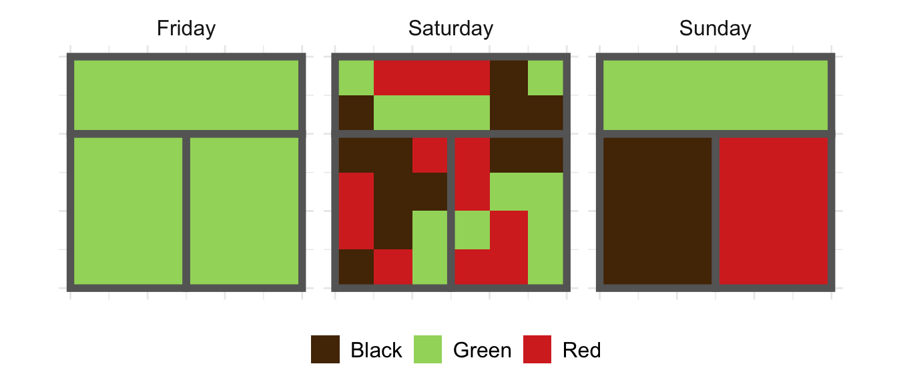
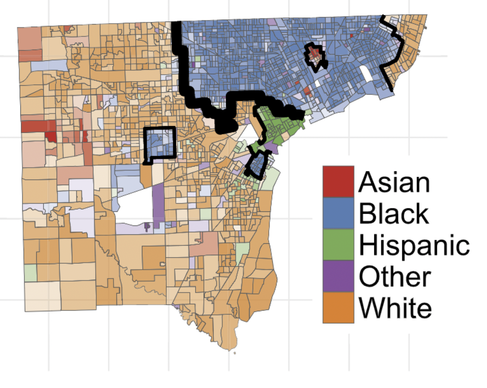

Information Measures Segregation
Editor’s note: this post and the following one are hastily revised blog posts from early in my graduate career. They reflect some simplistic thinking about questions of segregation and equity. I am working to do better, and I own all mistakes.
This post is about mathematical methods for studying diversity and spatial segregation using information theory. I’d like to stipulate at the outset:
More generally, segregation refers to ideology, policy, and social processes. I’m not talking about any of these things: just patterned differences of distributions of people in space.
Recap
Last time, we studied the information-theoretic idea of entropy and its relationship to our intuitive concept of diversity. We saw that the entropy \(H\) is highest precisely when all possible groups are represented equally in a population, and lowest when only one group is represented. High entropy, high diversity.
Now let’s move on to an information-theoretic view of segregation. It’s important to remember that segregation is a fundamentally distinct concept from diversity. We can remind ourselves of this difference by recalling the example of the tea drinkers in the cafe. There are drinkers who prefer black, red, and green teas; on three different days, the population of the cafe looked like this:

We’re interested in whether or not the shop is diverse, and whether or not it is segregated (by room). Intuitively,
- Friday is neither diverse nor segregated.
- Saturday is diverse, but relatively unsegregated.
- Sunday is diverse but highly segregated.
As you may remember, the entropy \(H\) could distinguish Friday (\(H = 0\)) from Saturday and Sunday (\(H = 1.10\)), but couldn’t distinguish Saturday and Sunday from each other. For that we need more subtle ideas. Let’s dive in!
Local Entropy
One way to think about segregation is just to think about diversity again – but on a lower level of organization. To see this, compare Saturday and Sunday again, within each room. Computing entropies for each of the three rooms individually, on each day, we have:
| Day | Garden | Left | Right |
|---|---|---|---|
| Friday | 0.00 | 0.00 | 0.00 |
| Saturday | 1.08 | 1.01 | 1.03 |
| Sunday | 0.00 | 0.00 | 0.00 |
Just as we’d expect, the entropies in the individual rooms are zero on Friday and Sunday, but high on Saturday, reflecting diversity in each room.
Mathematically, the entropy of each individual room is an example of conditioned or local entropy. To write this down, let’s allow \(Y\) to be a random variable denoting the tea preference of a randomly selected customer, and \(X\) be a random variable denoting where they sit in the cafe. Then, we can write the overall entropy as \(H(Y)\), and the entropy of tea preferences conditioned on sitting in the garden as as \(H(Y \vert X = \text{garden})\). The average value of the conditioned entropy across all rooms is important enough to have a special name: the conditional entropy. We can write it as:
\[H(Y\vert X) \triangleq \sum_{x \in \{\text{garden, left, right}\}} H(Y|X = x) \mathbb{P}(X = x)\;.\]
To calculate the conditional entropy, we compute the local entropy conditioned on each room, and then take a weighted average in which each room counts according to its “population.” This weighting is reflected in the factor \(\mathbb{P}(X = x)\), which can be read as “the probability that a randomly selected patron is sitting in room \(x\).” In our example, this is the same as the proportion of patrons in room \(x\). Applying the formula above to the local entropies we calculated earlier, we have that \(H(Y\vert X) \approx 1.09\) on Saturday, and is zero on Friday and Sunday.
Mutual Information Measures Segregation
Let’s summarise:
| Day | Diverse | Segregated | \(H(Y)\) | \(H(Y \vert X)\) |
|---|---|---|---|---|
| Friday | No | No | 0.00 | 0.00 |
| Saturday | Yes | No | 1.10 | 1.09 |
| Sunday | Yes | Yes | 1.10 | 0.00 |
A pattern is emerging: if diversity is measured by high \(H(Y)\), segregation is measured by high \(H(Y)\) and low \(H(Y \vert X)\). The difference between \(H(Y)\) and \(H(Y \vert X)\) turns out to be a fundamental concept in information theory: the mutual information, denoted \(I(X,Y)\).
\[ I(X,Y) \triangleq H(Y) - H(Y \vert X) \;.\]
Recall from last post that \(H(Y)\) measures the difficulty of a guessing game in which I try to match the preferences of the cafe customers. From our discussion above, we can think of \(H(Y\vert X)\) in similar terms: its the difficulty of a guessing game in which I try to match the preferences of customers in in a single room. So, \(I(X,Y)\) can be interpreted as the (average) value of knowing which room I need to serve. The value is high on Sunday: matching the preferences of the whole shop is hard (high entropy), but if you tell me which room I am serving, the problem is suddenly easy – I only need to accomodate one kind of customer. This phenomenon is measured by a high value of \(I(X,Y) = 1.10\). On Saturday, however, matching the preferences of any individual room is about as hard as matching the preferences of the whole shop: both the entropy \(H(Y)\) and conditional entropy \(H(Y\vert X)\) are high, giving a low value of \(I(X,Y)\).
Another natural way to say this is that knowing what room I am serving is highly informative on Sunday, but not on Saturday. The mutual information measures exactly how informative that knowledge really is.
Let’s now cash out the role of the mutual information in the measurement of segregation. It’s possible to prove that the only case in which \(I(X,Y) = 0\) is precisely the one in which each room has the same distribution of tea preferences as the shop generally. This obtains on Friday and Saturday, but not Sunday. Furthermore, \(I(X,Y)\) achieves its maximum value of \(H(Y)\) precisely when each room has just one kind of tea drinker: the Saturday scenario. The larger \(I(X,Y)\), the greater role that your tea preference plays in determining what room you sit in.
Indeed, \(I(X,Y)\) turns out to be such a natural measure of segregation that it was reinvented in the sociological community some 25 years after Shannon’s seminal work founding information theory. The frequently used “Information Theory Index” of Theil and Finezza (1971)1 is nothing more than \(I(X,Y) / H(Y)\); the normalization by \(H(Y)\) results in a measure that takes values in \([0,1]\). Formally, what \(I(X,Y)\) measures is unevenness: the tendency of groups to be differently-distributed in space. Since Theil and Finezza, a number2 of methodologists3 have formulated4 a variety5 of measures,67 all of which can be viewed as normalized mutual informations.8
Mutual Information Measures Dependence
Readers with statistical background might read the above as a statement about dependence: \(I(X,Y)\) measures the degree of statistical association between room and tea preference. Let’s step back from the context of diversity for a moment to explore this point. To do this, let’s compare \(I(X,Y)\) to a more familiar quantity that does something similar: the correlation coefficient \(R^2\). If you took a statistics class, you might remember linear regression, the problem of drawing a “best fit” line through a cloud of data plotted on the \(x-y\) plane. One thing you might have done was to compute “\(R^2\),” which is more formally called the Pearson correlation coefficient. When \(R^2 = 1\), the explanatory variable \(x\) is perfectly correlated with the explanandum \(y\), but when \(R^2 = 0\), there’s no linear relationship. One thing that might have been emphasized to you is:
\(R^2 = 0\) does not imply that the variables \(x\) and \(y\) are independent.
Here’s a set of examples that you can view on Wikipedia: the bottom row data sets are all uncorrelated (\(R^2 = 0\)), but clearly not independent.
{kind=link}
The mutual information \(I(X,Y)\) is something like a supercharged correlation coefficient, in the sense that:
\(I(X,Y) = 0\) does imply that \(X\) and \(Y\) are independent.
One nice thing about this result is that it actually makes precise an intuition about probabilistic dependence that many of us share: two variables are dependent if knowing one “gives you information” about the other. \(I(X,Y)\) quantifies this idea and makes it rigorously correct. Another way to say this is:
The tea shop is segregated when knowing which room someone is sitting in gives high information about their tea preferences, or vice versa.
Diversity = Exposure + Segregation
Returning to segregation and diversity, we’re ready to write out a lovely and simple equation relating diversity and segregation across spatial scales. Let’s go back to the definition of \(I(X,Y)\) above. Let’s recall first that \(H(Y)\) measures the diversity of the entire shop. Next, the conditional entropy \(H(Y|X)\) is a measure of average diversity in each room. In the context of segregation studies, \(H(Y|X)\) measures exposure – the diversity that an individual experiences in their local environment. From my individual perspective, the diversity of the entire shop doesn’t matter – just the diversity of my immediate surroundings. Finally, as we discussed above, the mutual information \(I(X,Y)\) measures the segregation of the entire shop. If we take the definition of \(I(X,Y) = H(Y) - H(Y|X)\) and rearrange the terms, we wind up with what I think of as the fundamental equation of segregation and diversity:
\[ \begin{aligned} H(Y) &= H(Y|X) + I(X,Y) \\ \text{Global Diversity} &= \text{Local Exposure} + \text{Global Segregation} \end{aligned} \tag{1}\]
What’s striking about this equation is not surprise or complexity, but the way it so neatly organizes natural concepts into a quantitative order. The intuition here is simple: if there are many groups coexisting in a system (global diversity is high), then they must exist either in the same spaces (local exposure is high) or in difference spaces (global segregation is high). One of my favorite points about information theory is its ability to give precise quantitative formulations for common sense ideas about structure and learning; this equation is a prime example.
Dividing Walls
In fact, we can do even more complex decompositions. Let \(f:X \mapsto Z\) be a function. We think of \(f\) as an aggregation or labeling. This is an extremely practical propety of information measures when performing multiscale spatial analysis. Here’s a figure from my paper on this topic:

This figure divides the city of Detroit, MI into six regions. If \(X\) is a census tract, we can think of \(f:X\mapsto X\) as the function that assigns to each \(X\) the region in which that tract is located. Now, mathematically, a quick argument shows that we can write \[ I(X,Y) = I(Z,Y) + I(X,Y|Z)\;, \] where \(I(X,Y|Z)\) is the mean mutual information within each of the regions. We can again interpret these terms: \(I(Z,Y)\) is the amount of segregation accounted for by the division into regions, while \(I(X,Y|Z)\) is the amount of segregation “left over” because it lies within regions. Substituting back into Equation 1, we have
\[ \begin{aligned} H(Y) &= H(Y|X) + I(Z,Y) + I(X,Y|Z) \\ \text{Global Diversity} &= \text{Local Exposure} + \text{Segregation Between Regions} + \text{Segregation Within Regions} \end{aligned} \]
This style of analysis is extremely helpful for studying segregation at multiple scales.
Extensions
- The decomposability property of Equation 1 is not unique to entropy and information measures. More generally, this is a property of Bregman divergences.
- An implication is that other measures can be customed designed for different kinds of data. This is important when considering data with ordered categories like education or income levels – you wouldn’t want to use simple entropy measures for these, because entropy measures don’t account for the fact that these kinds of categories have an important ordering attached to them.
Further Reading
- These notes give a more detailed exposition of the same overall approach and attitude.
- My paper “Structure and information in spatial segregation” discusses how to take these ideas and operationalize them for spatial data. There, the main question is: how should we account for the metric structure of spatial data when studying spatial segregation? This leads to some interesting mathematics and algorithms.
Footnotes
Theil, H., & Finezza, A. J. (1971). A note on the measurement of racial integration of schools by means of informational concepts. Taylor and Francis.↩︎
Reardon, S. F. (2008). Measures of Ordinal Segregation. In Y. Flückiger, S. F. Reardon, & J. Silber (Eds.), Occupational and Residential Segregation (Research on Economic Inequality, Volume 17) (pp. 129–155).↩︎
Reardon, S. F., & O’Sullivan, D. (2004). Measures of Spatial Segregation. Sociological Methodology, 34(1), 121–162. http://doi.org/10.1111/j.0081-1750.2004.00150.x↩︎
Reardon, S. F., & Firebaugh, G. (2002). Measures of multigroup segregation. Sociological Methodology, 32, 33–67. http://doi.org/10.1111/1467-9531.00110↩︎
Jargowsky, P. A., & Kim, J. (2005). A measure of spatial segregation: The generalized neighborhood sorting index. National Poverty Center Working Paper Series. Retrieved from http://nationalpovertycenter.net/publications/workingpaper05/paper03/jargowsky_kim_21mar2005.pdf↩︎
Roberto, E. (2015). Measuring Inequality and Segregation. arXiv.org, 1–26. Retrieved from http://arxiv.org/abs/1508.01167↩︎
Roberto, E. (2016). The Spatial Context of Residential Segregation. arXiv.org, 1–27.↩︎
Chodrow, P. (2017). Structure and Information in Spatial Segregation. Proceedings of the National Academy of Sciences.↩︎